Photo credits
Where the photos and logos on this site came from, who made them, and the licenses they're used under. Crestone job photos from Colorado are used with permission of the Colorado company.
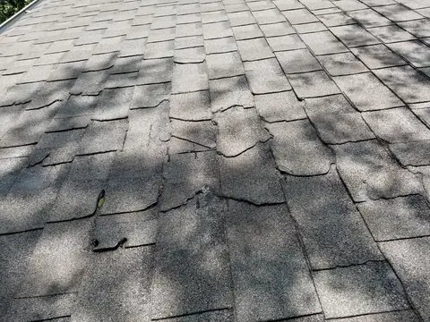
A1 (a1-1049.webp, a1-800.webp, a1-480.webp)
"Asphalt shingles damage.jpg" by Samuel Bolton, CC BY-SA 4.0, via Wikimedia Commons (https://commons.wikimedia.org/wiki/File:Asphalt_shingles_damage.jpg)
Author: Samuel Bolton. License: CC BY-SA 4.0. Source.
Used on: areas/maryville/, blog post 23, blog post 10, blog post 6, blog post 30, blog post 2, blog post 36, blog post 3, blog post 27, blog post 5, blog post 8, blog post 14, blog post 20, blog post 15
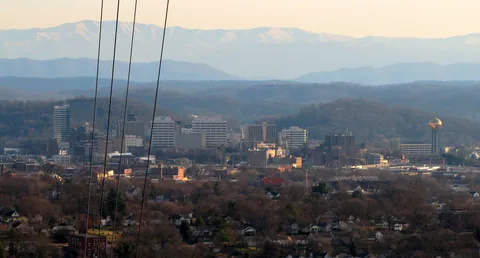
A2 (a2-1600.webp, a2-800.webp, a2-480.webp)
"Knoxville-from-sharps-ridge-tn2.jpg" by Brian Stansberry, CC BY 3.0, via Wikimedia Commons (https://commons.wikimedia.org/wiki/File:Knoxville-from-sharps-ridge-tn2.jpg)
Author: Brian Stansberry. License: CC BY 3.0. Source.
Used on: areas/knoxville/, blog post 17
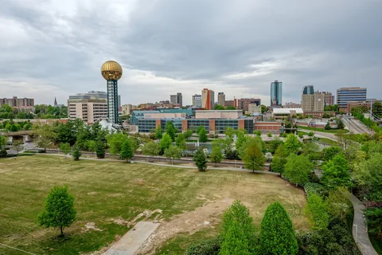
A3 (a3-1600.webp, a3-800.webp, a3-480.webp)
"Downtown - Knoxville, Tennessee - April 19, 2014.jpg" by David Ratledge, CC BY 4.0, via Wikimedia Commons (https://commons.wikimedia.org/wiki/File:Downtown_-_Knoxville,_Tennessee_-_April_19,_2014.jpg)
Author: David Ratledge. License: CC BY 4.0. Source.
Used on: areas/knoxville/, blog post 7, blog post 34, blog post 19, blog post 28, faq/, other-services/windows-doors/
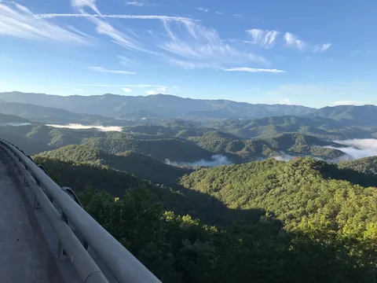
A4 (a4-1600.webp, a4-800.webp, a4-480.webp)
"Foothills Parkway, October 2018--Andrea Walton (43968388000).jpg" by Great Smoky Mountains National Park from Gatlinburg, TN, Public domain, via Wikimedia Commons (https://commons.wikimedia.org/wiki/File:Foothills_Parkway,_October_2018--Andrea_Walton_(43968388000).jpg)
Author: Great Smoky Mountains National Park from Gatlinburg, TN. License: Public domain. Source.
Used on: areas/blount-county/, areas/seymour/, contact/
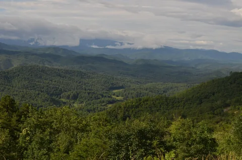
A5 (a5-1600.webp, a5-800.webp, a5-480.webp)
"Foothills Parkway Overlook.jpg" by William McKeehan, CC BY-SA 2.0, via Wikimedia Commons (https://commons.wikimedia.org/wiki/File:Foothills_Parkway_Overlook.jpg)
Author: William McKeehan. License: CC BY-SA 2.0. Source.
Used on: areas/seymour/
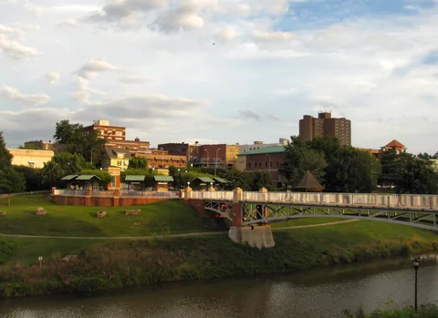
A6 (a6-1600.webp, a6-800.webp, a6-480.webp)
"Maryville-from-Blount-County-tn1.jpg" by Brian Stansberry, CC BY 3.0, via Wikimedia Commons (https://commons.wikimedia.org/wiki/File:Maryville-from-Blount-County-tn1.jpg)
Author: Brian Stansberry. License: CC BY 3.0. Source.
Used on: areas/maryville/
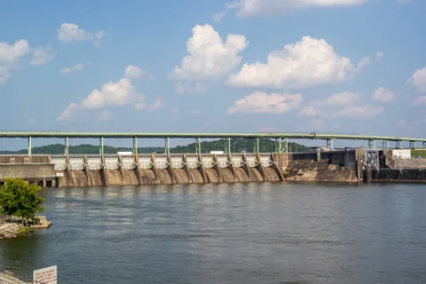
A7 (a7-1600.webp, a7-800.webp, a7-480.webp)
"Fort Loudoun Lock & Dam - Lenoir City, Tennessee - August 3, 2014.jpg" by Lee Ann Ratledge, CC BY 4.0, via Wikimedia Commons (https://commons.wikimedia.org/wiki/File:Fort_Loudoun_Lock_%26_Dam_-_Lenoir_City,_Tennessee_-_August_3,_2014.jpg)
Author: Lee Ann Ratledge. License: CC BY 4.0. Source.
Used on: areas/lenoir-city/, areas/loudon-county/
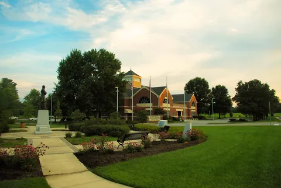
A8 (a8-1600.webp, a8-800.webp, a8-480.webp)
"Farragut-Town-Hall-tn1.jpg" by Brian Stansberry, CC BY 3.0, via Wikimedia Commons (https://commons.wikimedia.org/wiki/File:Farragut-Town-Hall-tn1.jpg)
Author: Brian Stansberry. License: CC BY 3.0. Source.
Used on: areas/farragut/, blog post 34, blog post 9, blog post 32, blog post 25, blog post 28

A9 (a9-1440.webp, a9-800.webp, a9-480.webp)
"FEMA - 38076 - A Blue Tarp installed on a home in Terrebone Parrish, LA.jpg" by Barry Bahler, Public domain, via Wikimedia Commons (https://commons.wikimedia.org/wiki/File:FEMA_-_38076_-_A_Blue_Tarp_installed_on_a_home_in_Terrebone_Parrish,_LA.jpg)
Author: Barry Bahler. License: Public domain. Source.
Used on: blog/, blog post 23, blog post 10, blog post 6, blog post 2, blog post 3, blog post 5, blog post 14, blog post 15, roofing/, roofing/emergency-damage-repair/, roofing/insurance-claim-documentation/

A10 (a10-1166.webp, a10-800.webp, a10-480.webp)
"Jonas Clore House, Sycamore Street and 7th Street, Belleview, KY.jpg" by w_lemay, CC BY-SA 2.0, via Wikimedia Commons (https://commons.wikimedia.org/wiki/File:Jonas_Clore_House,_Sycamore_Street_and_7th_Street,_Belleview,_KY.jpg)
Author: w_lemay. License: CC BY-SA 2.0. Source.
Used on: blog post 26, blog post 11
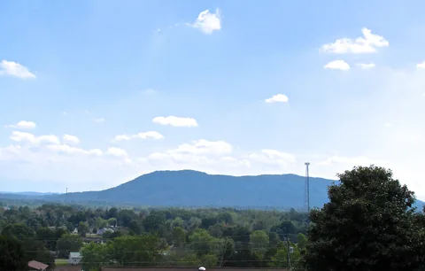
A11 (a11-1600.webp, a11-800.webp, a11-480.webp)
"Plainview-House-Mountain-tn1.jpg" by Brian Stansberry, CC BY 4.0, via Wikimedia Commons (https://commons.wikimedia.org/wiki/File:Plainview-House-Mountain-tn1.jpg)
Author: Brian Stansberry. License: CC BY 4.0. Source.
Used on: areas/karns/, areas/knox-county/, blog post 1, blog post 13, financing/
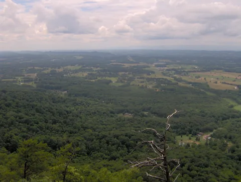
A12 (a12-1600.webp, a12-800.webp, a12-480.webp)
"House-mountain-west-tn2.jpg" by Brian Stansberry, CC BY 3.0, via Wikimedia Commons (https://commons.wikimedia.org/wiki/File:House-mountain-west-tn2.jpg)
Author: Brian Stansberry. License: CC BY 3.0. Source.
Used on: areas/, areas/powell/, blog post 24, blog post 12, blog post 5, blog post 1, blog post 13
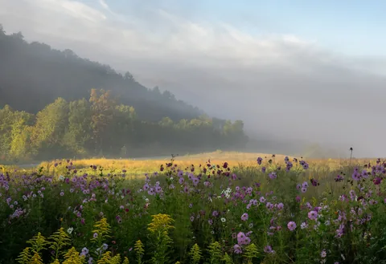
A13 (a13-1600.webp, a13-800.webp, a13-480.webp)
"Meadow in the Smoky Mountains (41665h).jpg" by Rhododendrites, CC BY-SA 4.0, via Wikimedia Commons (https://commons.wikimedia.org/wiki/File:Meadow_in_the_Smoky_Mountains_(41665h).jpg)
Author: Rhododendrites. License: CC BY-SA 4.0. Source.
Used on: areas/sevier-county/, areas/sevierville/, blog/, blog post 8
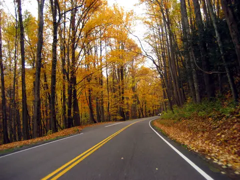
A14 (a14-1600.webp, a14-800.webp, a14-480.webp)
"Great Smoky Mountains National Park in Autumn.jpg" by (WT-en) Benjiho at English Wikivoyage, Public domain, via Wikimedia Commons (https://commons.wikimedia.org/wiki/File:Great_Smoky_Mountains_National_Park_in_Autumn.jpg)
Author: (WT-en) Benjiho at English Wikivoyage. License: Public domain. Source.
Used on: areas/sevierville/

C02 (c02-1600.webp, c02-800.webp, c02-480.webp)
Crestone Roofing job photo, taken in Colorado, used with permission.
Author: Crestone Roofing. License: Used with permission. Source.
Used on: home page, areas/oak-ridge/, blog/, blog post 10, blog post 9, blog post 36, blog post 32, blog post 3, blog post 25, blog post 27, blog post 20, projects/
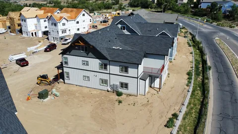
C03 (c03-1600.webp, c03-800.webp, c03-480.webp)
Crestone Roofing job photo, taken in Colorado, used with permission.
Author: Crestone Roofing. License: Used with permission. Source.
Used on: areas/lenoir-city/, roofing/

C04 (c04-1500.webp, c04-800.webp, c04-480.webp)
Crestone Roofing job photo, taken in Colorado, used with permission.
Author: Crestone Roofing. License: Used with permission. Source.
Used on: areas/knoxville/, blog post 35, blog post 12, blog post 4, free-roof-inspection/, projects/, roofing/, roofing/church-roofing/
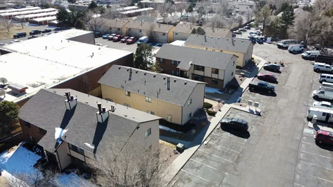
C05 (c05-1600.webp, c05-800.webp, c05-480.webp)
Crestone Roofing job photo, taken in Colorado, used with permission.
Author: Crestone Roofing. License: Used with permission. Source.
Used on: areas/hardin-valley/, blog post 35, blog post 4, blog post 31
C07 (c07-1600.webp, c07-800.webp, c07-480.webp)
Crestone Roofing job photo, taken in Colorado, used with permission.
Author: Crestone Roofing. License: Used with permission. Source.
Used on: blog post 26
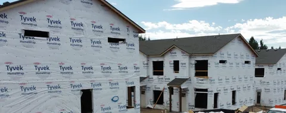
C08 (c08-1600.webp, c08-800.webp, c08-480.webp)
Crestone Roofing job photo, taken in Colorado, used with permission.
Author: Crestone Roofing. License: Used with permission. Source.
Used on: areas/hardin-valley/, blog post 18, blog post 11, other-services/, other-services/siding/

C09 (c09-1600.webp, c09-800.webp, c09-480.webp)
Crestone Roofing job photo, taken in Colorado, used with permission.
Author: Crestone Roofing. License: Used with permission. Source.
Used on: roofing/church-roofing/
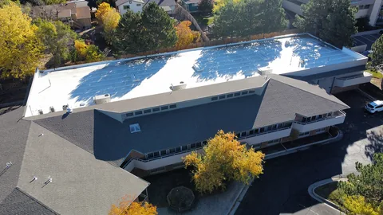

C12 (c12-1500.webp, c12-800.webp, c12-480.webp)
Crestone Roofing job photo, taken in Colorado, used with permission.
Author: Crestone Roofing. License: Used with permission. Source.
Used on: areas/farragut/, areas/karns/, areas/knox-county/, areas/lenoir-city/, areas/powell/, blog/, blog post 10, blog post 7, blog post 34, blog post 24, blog post 35, blog post 12, blog post 6, blog post 4, blog post 26, blog post 31, blog post 9, blog post 16, blog post 18, blog post 30, blog post 19, blog post 36, blog post 32, blog post 3, blog post 25, blog post 21, blog post 11, blog post 27, blog post 29, blog post 17, blog post 8, blog post 20, blog post 1, blog post 15, blog post 28, blog post 13, free-roof-inspection/
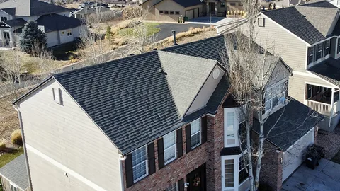

C16 (c16-1600.webp, c16-800.webp, c16-480.webp)
Crestone Roofing job photo, taken in Colorado, used with permission.
Author: Crestone Roofing. License: Used with permission. Source.
Used on: blog/, blog post 23, blog post 18, blog post 19, blog post 32, blog post 11, blog post 29, blog post 17, blog post 22, blog post 28
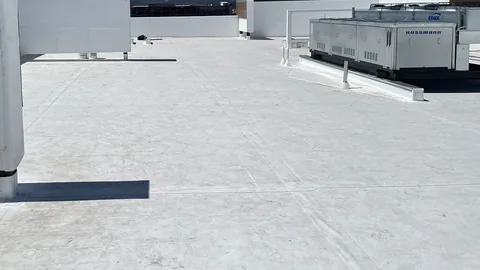
C22 (c22-1218.webp, c22-800.webp, c22-480.webp)
Crestone Roofing job photo, taken in Colorado, used with permission.
Author: Crestone Roofing. License: Used with permission. Source.
Used on: blog post 35, blog post 26
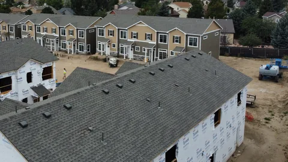
C23 (c23-1600.webp, c23-800.webp, c23-480.webp)
Crestone Roofing job photo, taken in Colorado, used with permission.
Author: Crestone Roofing. License: Used with permission. Source.
Used on: blog post 18, blog post 11, blog post 29, blog post 22
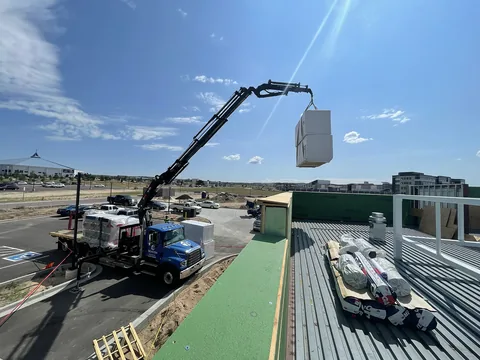
C24 (c24-1500.webp, c24-800.webp, c24-480.webp)
Crestone Roofing job photo, taken in Colorado, used with permission.
Author: Crestone Roofing. License: Used with permission. Source.
Used on: blog post 33, projects/
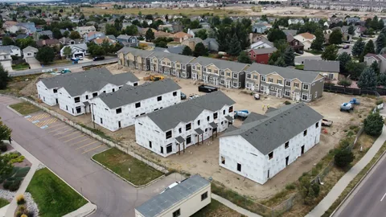
C25 (c25-1600.webp, c25-800.webp, c25-480.webp)
Crestone Roofing job photo, taken in Colorado, used with permission.
Author: Crestone Roofing. License: Used with permission. Source.
Used on: blog post 29, blog post 22, projects/

C26 (c26-1053.webp, c26-800.webp, c26-480.webp)
Crestone Roofing job photo, taken in Colorado, used with permission.
Author: Crestone Roofing. License: Used with permission. Source.
Used on: home page, areas/farragut/, areas/powell/, areas/sevierville/, blog/, blog post 10, blog post 7, blog post 6, blog post 26, blog post 9, blog post 33, blog post 16, blog post 30, blog post 19, blog post 2, blog post 36, blog post 3, blog post 25, blog post 21, blog post 27, blog post 17, blog post 8, blog post 14, blog post 22, blog post 20, blog post 15, blog post 28, blog post 13, free-roof-inspection/, products/, roofing/emergency-damage-repair/
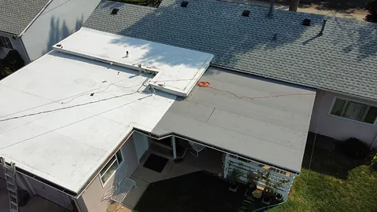
C31 (c31-900.webp, c31-800.webp, c31-480.webp)
Crestone Roofing job photo, taken in Colorado, used with permission.
Author: Crestone Roofing. License: Used with permission. Source.
Used on: areas/oak-ridge/

C32 (c32-900.webp, c32-800.webp, c32-480.webp)
Crestone Roofing job photo, taken in Colorado, used with permission.
Author: Crestone Roofing. License: Used with permission. Source.
Used on: areas/oak-ridge/, blog/, blog post 23, blog post 24, blog post 12, blog post 4, blog post 31, blog post 30, blog post 2, blog post 32, blog post 25, blog post 5, blog post 1, blog post 15, blog post 13
C35 (c35-1600.webp, c35-800.webp, c35-480.webp)
Crestone Roofing job photo, taken in Colorado, used with permission.
Author: Crestone Roofing. License: Used with permission. Source.
Used on: projects/, roofing/church-roofing/
C37 (c37-1600.webp, c37-800.webp, c37-480.webp)
Crestone Roofing job photo, taken in Colorado, used with permission.
Author: Crestone Roofing. License: Used with permission. Source.
Used on: roofing/commercial-roofing/

C39 (c39-1166.webp, c39-800.webp, c39-480.webp)
Crestone Roofing job photo, taken in Colorado, used with permission.
Author: Crestone Roofing. License: Used with permission. Source.
Used on: home page, areas/blount-county/, areas/hardin-valley/, areas/maryville/, areas/seymour/, blog/, blog post 23, blog post 7, blog post 24, blog post 35, blog post 6, blog post 19, blog post 2, blog post 21, blog post 27, blog post 5, blog post 14, blog post 20, free-roof-inspection/, roofing/, roofing/emergency-damage-repair/, roofing/insurance-claim-documentation/
J01 (j01-1396.webp, j01-800.webp, j01-480.webp)
Crestone Roofing job photo, taken in Colorado, used with permission.
Author: Crestone Roofing. License: Used with permission. Source: CompanyCam photo 3586852888, captured 2026-09-21.
Used on: projects/
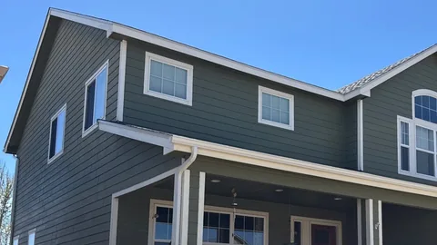
J03 (j03-1120.webp, j03-800.webp, j03-480.webp)
Crestone Roofing job photo, taken in Colorado, used with permission.
Author: Crestone Roofing. License: Used with permission. Source: CompanyCam photo 3117726029, captured 2026-04-22.
Used on: other-services/, other-services/siding/
J04 (j04-1440.webp, j04-800.webp, j04-480.webp)
Crestone Roofing job photo, taken in Colorado, used with permission.
Author: Crestone Roofing. License: Used with permission. Source: CompanyCam photo 2741305657, captured 2025-11-12.
Used on: projects/
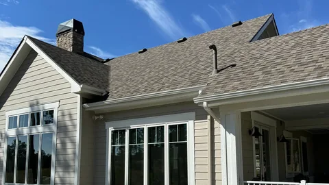
J05 (j05-1600.webp, j05-800.webp, j05-480.webp)
Crestone Roofing job photo, taken in Colorado, used with permission.
Author: Crestone Roofing. License: Used with permission. Source: CompanyCam photo 1649383290, captured 2024-06-26.
Used on: home page, areas/knox-county/, projects/, projects/roof-and-gutter-replacement-hail-damage/, roofing/, roofing/roof-replacement/
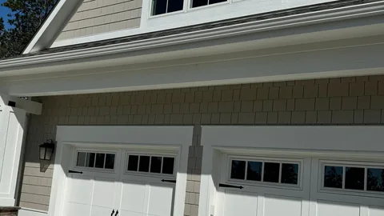
J06 (j06-1600.webp, j06-800.webp, j06-480.webp)
Crestone Roofing job photo, taken in Colorado, used with permission.
Author: Crestone Roofing. License: Used with permission. Source: CompanyCam photo 1649383880, captured 2024-06-26.
Used on: other-services/gutters/, projects/roof-and-gutter-replacement-hail-damage/
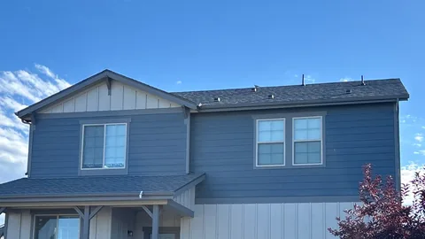
J08 (j08-1564.webp, j08-800.webp, j08-480.webp)
Crestone Roofing job photo, taken in Colorado, used with permission.
Author: Crestone Roofing. License: Used with permission. Source: CompanyCam photo 3551740798, captured 2026-09-09.
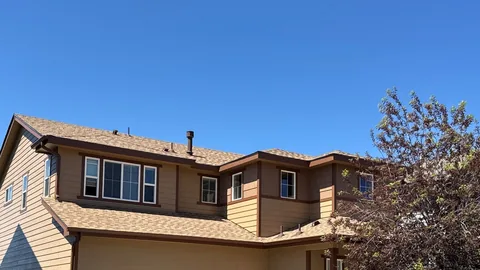
J09 (j09-1529.webp, j09-800.webp, j09-480.webp)
Crestone Roofing job photo, taken in Colorado, used with permission.
Author: Crestone Roofing. License: Used with permission. Source: CompanyCam photo 3233770975, captured 2026-05-30.
Used on: areas/hamblen-county/
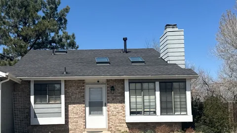
J11 (j11-1600.webp, j11-800.webp, j11-480.webp)
Crestone Roofing job photo, taken in Colorado, used with permission.
Author: Crestone Roofing. License: Used with permission. Source: CompanyCam photo 2197719039, captured 2025-04-11.
Used on: areas/anderson-county/, projects/, projects/leak-repair-and-roof-replacement-skylights/, roofing/chimney-repair/
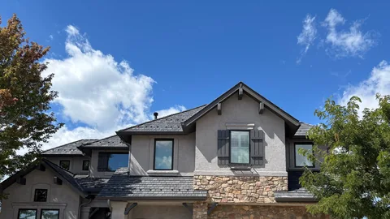
J12 (j12-1600.webp, j12-800.webp, j12-480.webp)
Crestone Roofing job photo, taken in Colorado, used with permission.
Author: Crestone Roofing. License: Used with permission. Source: CompanyCam photo 3586415887, captured 2026-09-21.
Used on: areas/sevier-county/
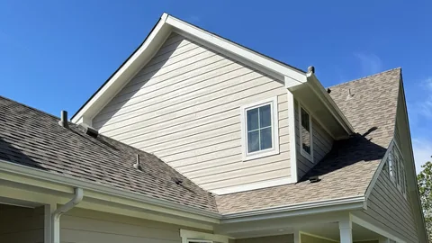
J13 (j13-1600.webp, j13-800.webp, j13-480.webp)
Crestone Roofing job photo, taken in Colorado, used with permission.
Author: Crestone Roofing. License: Used with permission. Source: CompanyCam photo 1649383568, captured 2024-06-26.
Used on: areas/karns/, projects/roof-and-gutter-replacement-hail-damage/
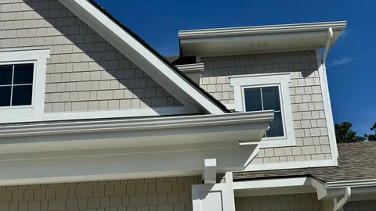
J14 (j14-1600.webp, j14-800.webp, j14-480.webp)
Crestone Roofing job photo, taken in Colorado, used with permission.
Author: Crestone Roofing. License: Used with permission. Source: CompanyCam photo 1649383922, captured 2024-06-26.
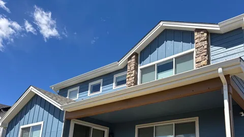
J15 (j15-1529.webp, j15-800.webp, j15-480.webp)
Crestone Roofing job photo, taken in Colorado, used with permission.
Author: Crestone Roofing. License: Used with permission. Source: CompanyCam photo 3095543989, captured 2026-04-15.
Used on: other-services/, other-services/decks-patios/, other-services/siding/
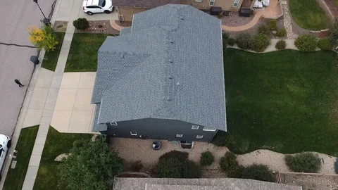
J16 (j16-1280.webp, j16-800.webp, j16-480.webp)
Crestone Roofing job photo, taken in Colorado, used with permission.
Author: Crestone Roofing. License: Used with permission. Source: CompanyCam photo 2609356039, captured 2025-09-22.
Used on: home page, areas/jefferson-city/, projects/
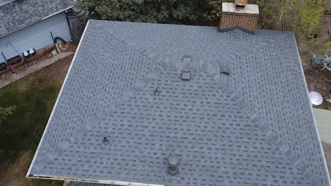
J18 (j18-960.webp, j18-800.webp, j18-480.webp)
Crestone Roofing job photo, taken in Colorado, used with permission.
Author: Crestone Roofing. License: Used with permission. Source: CompanyCam photo 2228843056, captured 2025-04-24.
Used on: areas/roane-county/, roofing/insurance-claim-documentation/
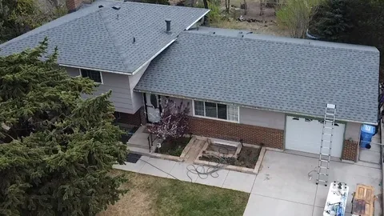
J19 (j19-924.webp, j19-800.webp, j19-480.webp)
Crestone Roofing job photo, taken in Colorado, used with permission.
Author: Crestone Roofing. License: Used with permission. Source: CompanyCam photo 2228842618, captured 2025-04-24.
Used on: areas/morristown/, projects/, roofing/roof-replacement/
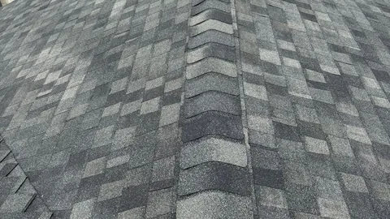
J20 (j20-1200.webp, j20-800.webp, j20-480.webp)
Crestone Roofing job photo, taken in Colorado, used with permission.
Author: Crestone Roofing. License: Used with permission. Source: CompanyCam photo 3468347891, captured 2026-08-13.
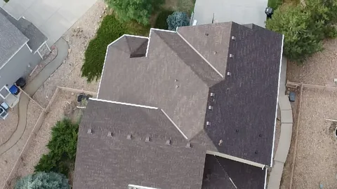
J21 (j21-1280.webp, j21-800.webp, j21-480.webp)
Crestone Roofing job photo, taken in Colorado, used with permission.
Author: Crestone Roofing. License: Used with permission. Source: CompanyCam photo 3461973422, captured 2026-08-12.
Used on: areas/hamblen-county/, areas/loudon/
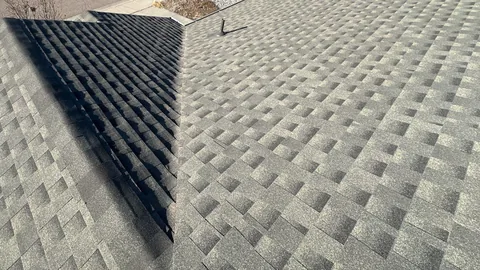
J22 (j22-1400.webp, j22-800.webp, j22-480.webp)
Crestone Roofing job photo, taken in Colorado, used with permission.
Author: Crestone Roofing. License: Used with permission. Source: CompanyCam photo 1958355785, captured 2024-12-04.
Used on: areas/jefferson-county/
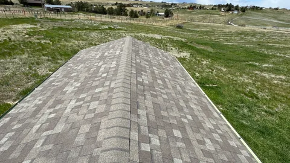
J23 (j23-1600.webp, j23-800.webp, j23-480.webp)
Crestone Roofing job photo, taken in Colorado, used with permission.
Author: Crestone Roofing. License: Used with permission. Source: CompanyCam photo 1556692105, captured 2024-05-07.
Used on: areas/loudon/, roofing/roof-replacement/
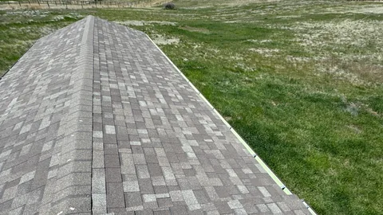
J24 (j24-1420.webp, j24-800.webp, j24-480.webp)
Crestone Roofing job photo, taken in Colorado, used with permission.
Author: Crestone Roofing. License: Used with permission. Source: CompanyCam photo 1556691362, captured 2024-05-07.
Used on: areas/loudon-county/
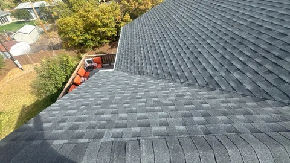
J25 (j25-1400.webp, j25-800.webp, j25-480.webp)
Crestone Roofing job photo, taken in Colorado, used with permission.
Author: Crestone Roofing. License: Used with permission. Source: CompanyCam photo 1868312226, captured 2024-10-17.
Used on: areas/jefferson-city/, other-services/decks-patios/
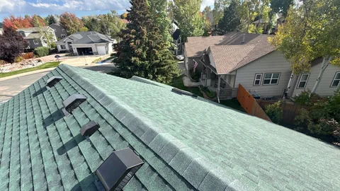
J26 (j26-1600.webp, j26-800.webp, j26-480.webp)
Crestone Roofing job photo, taken in Colorado, used with permission.
Author: Crestone Roofing. License: Used with permission. Source: CompanyCam photo 2670540550, captured 2025-10-15.
Used on: areas/roane-county/, projects/
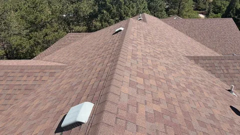
J28 (j28-1050.webp, j28-800.webp, j28-480.webp)
Crestone Roofing job photo, taken in Colorado, used with permission.
Author: Crestone Roofing. License: Used with permission. Source: CompanyCam photo 3396095150, captured 2026-07-22.
Used on: about/, areas/anderson-county/
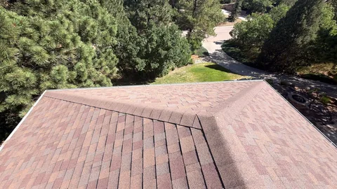
J29 (j29-1400.webp, j29-800.webp, j29-480.webp)
Crestone Roofing job photo, taken in Colorado, used with permission.
Author: Crestone Roofing. License: Used with permission. Source: CompanyCam photo 3396098232, captured 2026-07-22.
Used on: projects/

J30 (j30-1542.webp, j30-800.webp, j30-480.webp)
Crestone Roofing job photo, taken in Colorado, used with permission.
Author: Crestone Roofing. License: Used with permission. Source: CompanyCam photo 2712862871, captured 2025-10-31.
Used on: areas/sevier-county/, blog/, blog post 26, blog post 33, blog post 16, blog post 17, blog post 15, projects/, projects/metal-roof-replacement-standing-seam/, roofing/metal-roofing/

J31 (j31-1542.webp, j31-800.webp, j31-480.webp)
Crestone Roofing job photo, taken in Colorado, used with permission.
Author: Crestone Roofing. License: Used with permission. Source: CompanyCam photo 2712862850, captured 2025-10-31.
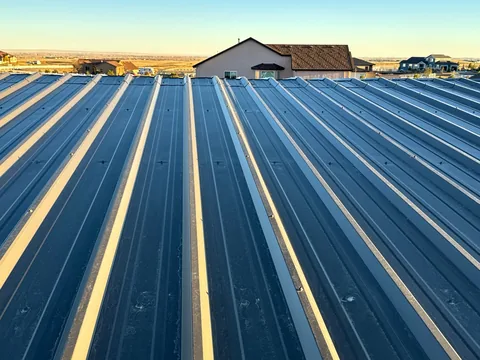
J32 (j32-1600.webp, j32-800.webp, j32-480.webp)
Crestone Roofing job photo, taken in Colorado, used with permission.
Author: Crestone Roofing. License: Used with permission. Source: CompanyCam photo 2706468375, captured 2025-10-29.
Used on: projects/, roofing/metal-roofing/
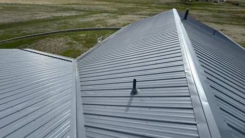
J33 (j33-1600.webp, j33-800.webp, j33-480.webp)
Crestone Roofing job photo, taken in Colorado, used with permission.
Author: Crestone Roofing. License: Used with permission. Source: CompanyCam photo 1558183145, captured 2024-05-07.
Used on: areas/jefferson-county/, blog/, blog post 34, blog post 33, blog post 16, projects/, roofing/metal-roofing/
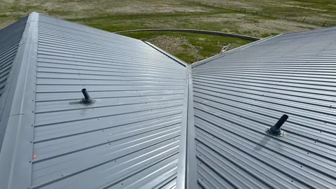
J34 (j34-1600.webp, j34-800.webp, j34-480.webp)
Crestone Roofing job photo, taken in Colorado, used with permission.
Author: Crestone Roofing. License: Used with permission. Source: CompanyCam photo 1558183033, captured 2024-05-07.
Used on: blog post 33
J36 (j36-1440.webp, j36-800.webp, j36-480.webp)
Crestone Roofing job photo, taken in Colorado, used with permission.
Author: Crestone Roofing. License: Used with permission. Source: CompanyCam photo 3456596126, captured 2026-08-10.
Used on: projects/, roofing/church-roofing/
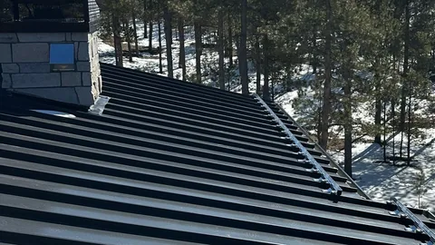
J38 (j38-1320.webp, j38-800.webp, j38-480.webp)
Crestone Roofing job photo, taken in Colorado, used with permission.
Author: Crestone Roofing. License: Used with permission. Source: CompanyCam photo 2040550660, captured 2025-01-28.
Used on: projects/, roofing/, roofing/metal-roofing/
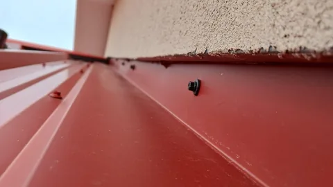
J39 (j39-1528.webp, j39-800.webp, j39-480.webp)
Crestone Roofing job photo, taken in Colorado, used with permission.
Author: Crestone Roofing. License: Used with permission. Source: CompanyCam photo 1145724247, captured 2023-07-11.
Used on: blog post 16, projects/
J40 (j40-1600.webp, j40-800.webp, j40-480.webp)
Crestone Roofing job photo, taken in Colorado, used with permission.
Author: Crestone Roofing. License: Used with permission. Source: CompanyCam photo 3663585434, captured 2026-10-02.
Used on: projects/
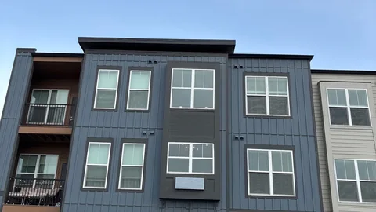
J41 (j41-1440.webp, j41-800.webp, j41-480.webp)
Crestone Roofing job photo, taken in Colorado, used with permission.
Author: Crestone Roofing. License: Used with permission. Source: CompanyCam photo 3593539142, captured 2026-09-23.
Used on: other-services/windows-doors/
J42 (j42-1440.webp, j42-800.webp, j42-480.webp)
Crestone Roofing job photo, taken in Colorado, used with permission.
Author: Crestone Roofing. License: Used with permission. Source: CompanyCam photo 3553452408, captured 2026-09-10.
Used on: projects/, roofing/commercial-roofing/
J43 (j43-850.webp, j43-800.webp, j43-480.webp)
Crestone Roofing job photo, taken in Colorado, used with permission.
Author: Crestone Roofing. License: Used with permission. Source: CompanyCam photo 1672115738, captured 2024-07-10.
Used on: projects/, roofing/, roofing/commercial-roofing/
J44 (j44-1440.webp, j44-800.webp, j44-480.webp)
Crestone Roofing job photo, taken in Colorado, used with permission.
Author: Crestone Roofing. License: Used with permission. Source: CompanyCam photo 3704350495, captured 2026-10-27.
Used on: other-services/, other-services/windows-doors/
J46 (j46-1600.webp, j46-800.webp, j46-480.webp)
Crestone Roofing job photo, taken in Colorado, used with permission.
Author: Crestone Roofing. License: Used with permission. Source: CompanyCam photo 3614055075, captured 2026-09-29.
Used on: projects/, roofing/commercial-roofing/
J47 (j47-1280.webp, j47-800.webp, j47-480.webp)
Crestone Roofing job photo, taken in Colorado, used with permission.
Author: Crestone Roofing. License: Used with permission. Source: CompanyCam photo 3709338148, captured 2026-10-28.
Used on: areas/anderson-county/, roofing/
J48 (j48-1400.webp, j48-800.webp, j48-480.webp)
Crestone Roofing job photo, taken in Colorado, used with permission.
Author: Crestone Roofing. License: Used with permission. Source: CompanyCam photo 3494094853, captured 2026-08-21.
Used on: roofing/skylight-repair/
J49 (j49-1200.webp, j49-800.webp, j49-480.webp)
Crestone Roofing job photo, taken in Colorado, used with permission.
Author: Crestone Roofing. License: Used with permission. Source: CompanyCam photo 3451199759, captured 2026-08-07.
Used on: roofing/roof-repair/, roofing/skylight-repair/
J50 (j50-1200.webp, j50-800.webp, j50-480.webp)
Crestone Roofing job photo, taken in Colorado, used with permission.
Author: Crestone Roofing. License: Used with permission. Source: CompanyCam photo 2197704547, captured 2025-04-11.
Used on: projects/leak-repair-and-roof-replacement-skylights/, roofing/skylight-repair/
J51 (j51-1440.webp, j51-800.webp, j51-480.webp)
Crestone Roofing job photo, taken in Colorado, used with permission.
Author: Crestone Roofing. License: Used with permission. Source: CompanyCam photo 2197703541, captured 2025-04-11.
Used on: projects/leak-repair-and-roof-replacement-skylights/
J52 (j52-1000.webp, j52-800.webp, j52-480.webp)
Crestone Roofing job photo, taken in Colorado, used with permission.
Author: Crestone Roofing. License: Used with permission. Source: CompanyCam photo 3307244031, captured 2026-06-23.
Used on: areas/jefferson-city/
J53 (j53-1000.webp, j53-800.webp, j53-480.webp)
Crestone Roofing job photo, taken in Colorado, used with permission.
Author: Crestone Roofing. License: Used with permission. Source: CompanyCam photo 3307243088, captured 2026-06-23.
Used on: roofing/, roofing/chimney-repair/
J54 (j54-1000.webp, j54-800.webp, j54-480.webp)
Crestone Roofing job photo, taken in Colorado, used with permission.
Author: Crestone Roofing. License: Used with permission. Source: CompanyCam photo 2774632424, captured 2025-11-26.
Used on: areas/roane-county/, roofing/chimney-repair/
J56 (j56-1600.webp, j56-800.webp, j56-480.webp)
Crestone Roofing job photo, taken in Colorado, used with permission.
Author: Crestone Roofing. License: Used with permission. Source: CompanyCam photo 3542025339, captured 2026-09-05.
Used on: areas/loudon-county/, other-services/, other-services/gutters/
J58 (j58-1440.webp, j58-800.webp, j58-480.webp)
Crestone Roofing job photo, taken in Colorado, used with permission.
Author: Crestone Roofing. License: Used with permission. Source: CompanyCam photo 2399700633, captured 2025-07-01.
Used on: roofing/roof-repair/
J59 (j59-1600.webp, j59-800.webp, j59-480.webp)
Crestone Roofing job photo, taken in Colorado, used with permission.
Author: Crestone Roofing. License: Used with permission. Source: CompanyCam photo 1252350447, captured 2023-09-28.
Used on: roofing/emergency-damage-repair/
J60 (j60-1600.webp, j60-800.webp, j60-480.webp)
Crestone Roofing job photo, taken in Colorado, used with permission.
Author: Crestone Roofing. License: Used with permission. Source: CompanyCam photo 2818280119, captured 2025-12-18.
J61 (j61-1200.webp, j61-800.webp, j61-480.webp)
Crestone Roofing job photo, taken in Colorado, used with permission.
Author: Crestone Roofing. License: Used with permission. Source: CompanyCam photo 3538254336, captured 2026-09-04.
Used on: areas/loudon/, roofing/, roofing/roof-repair/
J62 (j62-1200.webp, j62-800.webp, j62-480.webp)
Crestone Roofing job photo, taken in Colorado, used with permission.
Author: Crestone Roofing. License: Used with permission. Source: CompanyCam photo 2576680901, captured 2025-09-09.
Used on: areas/morristown/, roofing/roof-repair/
J64 (j64-1200.webp, j64-800.webp, j64-480.webp)
Crestone Roofing job photo, taken in Colorado, used with permission.
Author: Crestone Roofing. License: Used with permission. Source: CompanyCam photo 3437896113, captured 2026-08-04.
Used on: areas/hamblen-county/
J68 (j68-1536.webp, j68-800.webp, j68-480.webp)
Crestone Roofing job photo, taken in Colorado, used with permission.
Author: Crestone Roofing. License: Used with permission. Source: CompanyCam photo 2801449457, captured 2025-12-11.
Used on: projects/

J70 (j70-1200.webp, j70-800.webp, j70-480.webp)
Crestone Roofing job photo, taken in Colorado, used with permission.
Author: Crestone Roofing. License: Used with permission. Source: CompanyCam photo 2712862815, captured 2025-10-31.
Brand logos
Logos on the products page come from each maker's own website. Brand names and logos belong to their owners.
GAF (gaf.svg)
Source: https://www.gaf.com/en-us, checked 2026-10-26.
Owens Corning (owens-corning.svg)
Source: https://imagecdn.owenscorning.com/image/upload/v1575575892/meganav/oc-logo.svg, checked 2026-10-26.
Atlas (atlas.png)
Source: https://www.atlasroofing.com/img/atlas-logo.png, checked 2026-10-26.
IKO (iko.svg)
Source: https://www.iko.com/na/wp-content/uploads/2026/02/IKO-Logo.svg, checked 2026-10-26.
Malarkey (malarkey.svg)
Source: https://www.malarkeyroofing.com/app/themes/malarkey-roofing/src/images/logo-horizontal-full-color.svg, checked 2026-10-26.
Carlisle SynTec (carlisle.svg)
Source: https://www.carlislesyntec.com/-/media/Project/SynTec/Images/Featured-Image/Carlisle-SynTec-Logo2.ashx, checked 2026-10-26.
Elevate (holcimelevate.webp)
Source: https://www.holcimelevate.com/content/dam/elevateamericas/assets_rebrand/Elevate-Logo.png, checked 2026-10-26.
VELUX (velux.svg)
Source: https://www.velux.com/dist/velux-marketing/client/logo-sprite-93c691381cf5fc09.BZuVugaA.svg, checked 2026-10-26.
James Hardie (james-hardie.svg)
Source: https://images.ctfassets.net/dzi2asncd44t/1zXM9ZVxSHpXuLLWzOIf5s/8c5abf86f25fc326af14728a31407f5d/james-hardie-vector-logo.svg, checked 2026-10-26.
LP SmartSide (lp-smartside.svg)
Source: https://lpcorp.com/, checked 2026-10-26.
ProVia (provia.webp)
Source: https://www.provia.com/wp-content/uploads/2024/06/ProVia-logo.png, checked 2026-10-26.
Englert (englert.svg)
Source: https://www.englertinc.com/themes/custom/englertdptheme/images/englert-logo-black.svg, checked 2026-10-26.
Video
"The GAF Lifetime Roofing System | GAF Roofing" (GAF Roofing (YouTube))
Source: https://www.youtube.com/watch?v=qyx4p6OYuD0. Embedded with YouTube's privacy-enhanced player; nothing loads until you press play.
The Crestone Roofing mark is used by the Knoxville company.